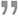
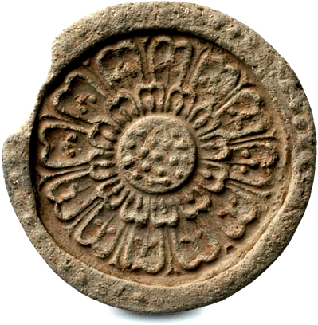

기관소개
이제는 문화가 세상을 움직이는 힘입니다.

문화의 힘은 단절이 아닌 소통과 교류에 있습니다. 과거는 현재와 대화하고 현재는 창조적인 미래로 이어져야 합니다. 우리 문화의 원류를 과거로부터 미래로,
그 영속성을 이어주는 책임, 그것은 우리 현대인들의 몫이며 온 국민과 함께 그 과제를 수행하는 길에 늘 문화재청이 함께 하겠습니다.
홍보영상
한반도 전역에는 우리조상의 영혼과 슬기가 스며있는 문화재들이 산재해있습니다. 문화재란, 인위적 또는 자연적으로 형성된 유산으로 역사적, 학술적, 예술적, 경관적 가치가 큰 것을 의미하는 것으로 장엄하고 화려한 건조물 문화재부터 섬세하고 아름다운 동산 문화재, 선조들의 예술혼을 느낄 수 있는 무형 문화재, 역사의 숨결이 어려 있는 사적지 그리고 천해의 자연을 증언하는 천연기념물 등이 있습니다. 또한기존의 전통문화유산과 달리 서양의 영향을 받은 근대 문화 재와 우리의 생활에 친숙한 민속자료 등 수많은 문화유산이 있습니다.
이러한 우리의 문화유산을 보존하여 후세에 물려줄 소중한 자산으로 전승 활용하고 찬란한 민족문화로 계승ㆍ발전시켜 세계 속에 그 우수성을 알리고 전파하는 중앙행정 기관이 바로 문화재청입니다. 문화재청에서는 땅속에 묻혀있던 문화재가 세상에 드러나 그 가치를 발휘하고 모든 사람들이 향유할 수 있도록 다양한 업무를 수행하고 있습니다. 탑, 궁궐, 사찰과 같은 건조물 문화재는 그 원형유지를 위하여 철저한 고증에 따라 보수, 정비를 실시하는 한편, 쉽게 파손될 수 있는 태화, 교각, 고문서 등의 동산 문화재는 첨단장비에 의한 분석과 과학적인
보존처리를 거쳐 그 원형을 보존하기 위하여 노력하고 있습니다. 또한 무분별한 개발과 건설로 인해 문화재와 그 주변 자연경관이 훼손되는 문화재 보존에 조화를 도모하고 있습니다.
문화재는 힘 있는 문화로 살아남아 현대인들과 끊임없이 대화하면서 선조들의 숨결과 지혜의 목소리를 후대에 전해줘야 비로소 문화재로서의 몫을 다하는 것입니다. 우리의 문화재를 적극적으로 활용하고 선조들의 지혜를 세계인과 나눌 수 있다면 우리의 문화유산은 더욱 아름답게 빛날 것입니다.
설립목적

문화유산의 보존과 가치창출로
민족문화 발전에 기여
문화는 국민의 삶의 질을 판가름 하는 일상생활의 중요한 요소가 되었고, 그 중에서도 전통문화는 한 국가와 민족의 문화 정체성을 유지하고,
또 문화산업의 근간을 이루는 국가경쟁력의 중요한 요소가 됐습니다. 문화는 이제 세상을 움직이는 힘입니다.
그 힘의 원천인 우리의 전통과 문화유산을 보존ㆍ관리하는 행정의 중심에는 바로 문화재청이 있습니다.
문화유산의 창조적 계승 및 발전으로 세계 일류 문화국가 실현

-

문화재 보존관리
문화재 정책 및 조사연구 품질향상과 전문인력
양성으로 문화재 보존관리의 기반 확충 -

문화재 가치증진
문화재의 사회, 역사, 경제적 가치 증진을 위해
문화재 보존 관리의 품질 제고 -

향유기회 확대
문화재 향유기회 확대로 문화재의 가치를
국내 및 국제 사회에 확산
역할
문화재청은 우리 겨레의 삶의 예지와 숨결이 깃들어 있는 소중한 문화재를
체계적으로 보존 및 관리하여 민족문화를 계승하고
이를 효율적으로 활용하여 국민의 문화적 향상을 도모하는 것을 기본임무로 하고 있습니다.
-
 문화재지정 및 등록
문화재 중에서 특히 중요한 것을 지정문화재로 지정하여 관리하는 일을 하고 있습니다. 국보·보물 같은 국가지정문화재 지정관리 업무는 문화재청에서 직접 담당하고 시도지정문화재 지정관리에 대해서는 지자체의 업무를 지원하고 있습니다. 또한, 지정되지 않은 문화재 중에서 보존을 위한 조치가 특히 필요한 것을 등록문화재로 등록하여 보존하는 일도 하고 있습니다.
문화재지정 및 등록
문화재 중에서 특히 중요한 것을 지정문화재로 지정하여 관리하는 일을 하고 있습니다. 국보·보물 같은 국가지정문화재 지정관리 업무는 문화재청에서 직접 담당하고 시도지정문화재 지정관리에 대해서는 지자체의 업무를 지원하고 있습니다. 또한, 지정되지 않은 문화재 중에서 보존을 위한 조치가 특히 필요한 것을 등록문화재로 등록하여 보존하는 일도 하고 있습니다.
- 현상변경·발굴 허가 국가지정문화재 또는 보호구역의 현상을 변경하거나 보존에 영향을 미칠 우려가 있는 행위를 하거나 지하나 해저에 묻혀있는 문화재를 발굴하기 위해서는 문화재청장의 허가를 받아야 합니다. 국가지정문화재와 관련된 각종 현상변경 및 국외반출·매장문화재의 발굴 신청 등을 검토하여 허가여부를 결정하는 것이 문화재청의 중요한 일 중의 하나입니다.
-
 보존과 재정지원
문화재청은 문화재의 보존·정비 등을 위한 재정지원을 하고 있습니다. 국가지정문화재 관리·수리 및 중요 무형문화재 보호·육성 등을 위한 국고보조금을 지원하고, 백제 등 7대 문화권 유적정비·남해안 관광벨트내 유적정비 등 각종 유적지 정비를 위한 예산을 지원하고 있습니다.
보존과 재정지원
문화재청은 문화재의 보존·정비 등을 위한 재정지원을 하고 있습니다. 국가지정문화재 관리·수리 및 중요 무형문화재 보호·육성 등을 위한 국고보조금을 지원하고, 백제 등 7대 문화권 유적정비·남해안 관광벨트내 유적정비 등 각종 유적지 정비를 위한 예산을 지원하고 있습니다.
- 중요 유적지 관리 문화재청은 경복궁, 창덕궁, 창경궁, 덕수궁과 종묘, 동구릉, 서오릉 등 수도권 지역의 조선 왕릉을 직접 관리하면서, 경복궁 복원 · 정비, 덕수궁 복원 · 정비사업 등을 추진하고 있습니다. 또한, 세종대왕 유적·현충사·칠백의총 등 중요 국가유적지를 관리하고 국립고궁박물관·국립해양문화재연구소 등을 운영하는 일을 맡고 있습니다.
- 세계화 및 남북교류 유네스코 세계 문화유산 등재·세계 기록유산 등재·‘인류구전 및 무형유산 걸작’ 선정 등을 통해 우리 문화재의 우수성 을 해외에 알리고, 일본·중국·러시아 등 외국과 문화재 분야 국제협력을 강화하는 일을 하고 있습니다. 또한, 고구려 고분군 보존 지원 등을 통해 남북 문화재 교류를 활성화하기 위한 노력도 기울이고 있습니다.
- 전문인력 양성 문화재청 소속의 「국립문화재연구소」를 통해 문화재의 과학적 보존관리를 위한 각종 조사·연구를 추진하고 있습니다. 또한, 국립 4년제 문화재 특수대학인 「한국전통문화대학교」를 설립·운영하여 문화재 전문인력을 양성하는 일에도 힘쓰고 있습니다.